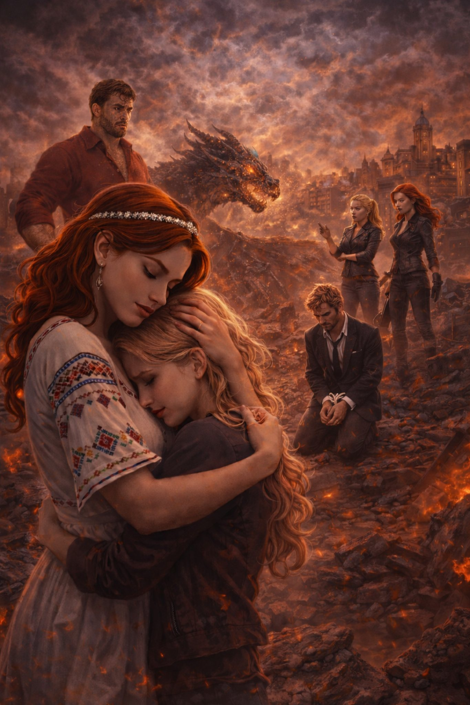

Поглавље 29: Епска битка за Београд
Página individual del capítulo con lectura y ejercicios.

Сцена 1: Рускиње у акцији
Када су Џон и Софија спремни да изврше жртву над Наташом, изненада се појављују две рускиње – Марина и Катарина. Оне нападају Џона и Софију, ослобађајући Луиса.
Луис (изненађено): "Шта радите овде? Мислио сам да сте отишле!"
Марина: "Остале смо да ти помогнемо. Нећемо дозволити да Јанкији преузму моћ."
Луис их гледа пуним захвалности. "Хвала вам. Хајде да завршимо ово."
Сцена 2: Луис преузима камење
Луис се пење на врх куле и отима камење од Џона. Џон покушава да се бори, али Луис je бржи.
Луис: "Ово je крај, Џон. Нећете добити моћ Часа дивљака."
Луис баца камење на земљу и уништава их. Наташа се ослобађа и, пуним беса, напада Софију.
Наташа: "Ти си издајница! Ниси вредна Београда!"
Софија пада на земљу, поражена.
Сцена 3: Јанкијска инвазија
Џон се смеје, иако je рањен. "Прекасно, Луис. Цела војска Јанкија je у Београду. Не можете их зауставити."
Луис гледа кроз прозор и види како војници улазе у град. Људи су у паници, а хаос je свуда.
Луис: "Имам идеју."
Он узима свој магични коцкиц и прави комбинације. Марина и Катарина постају гиганти, високи као зграде.
Луис: "Нападајте! Зауставите их!"
Гигантске рускиње крећу у борбу против војске. Њихова снага je невероватна, и Јанкији почињу да беже.
Сцена 4: Артанов повратак
Када се рускиње врате у нормалну величину, из реке Дунав излази чудовиште – Артан, који се спојио са злим духовима реке.
Наташа (уплашено): "Шта je то?!"
Луис: "То je Артан. Он je сада још опаснији."
Луис зна да не може поново да направи гиганте – магија се може користити само једном месечно. Он одлучује да сам постане гигант.
Луис: "Ово je моја борба."
Сцена 5: Епска битка
Луис, као гигант, бори се против Артана. Битка je жестока – зграде се руше, а улице су пуне уништења.
Артан: "Не можеш ме победити, Луис! Ја сам моћнији од тебе!"
Луис: "Не подцењуј ме, Артан. Београд je мој град!"
Луис користи своју снагу и памет да порази Артана. На крају, Артан пада у реку, поражен.
Сцена 6: Крај хаоса
Када се битка заврши, Луис се враћа у нормалну величину. Београд je у рушевинама, али хаос je заустављен.
Наташа (грли Луиса): "Ти си спасио Београд. Ти си мој херој."
Луис: "Нисам могао да дозволим да униште твој град."
Џон и Софија су заробљени, а рускиње се спремају да их одведу.
Крај двадесет деветог поглавља.